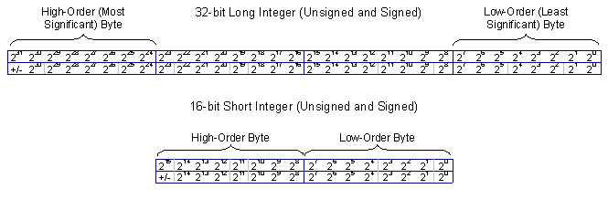
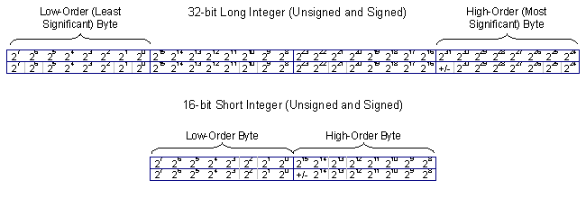
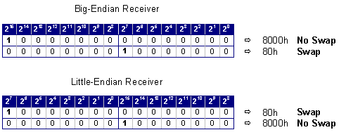

CIGI Host Emulator 3
|
CIGI Host Emulator 3 |
When a processor stores or performs an operation on a multiple-byte datum, the datum can be represented in one of two ways. In a "big-endian" configuration, the lowest-addressed, or "leftmost," byte is the high-order byte. Motorola and some other RISC architectures use this method. In "little-endian" architectures such as those used by Intel, the leftmost byte is the low-order byte.
The figure below illustrates the byte layout of signed and unsigned 16- and 32-bit data types on big-endian architectures:

Big-Endian Byte Order
The figure below illustrates the byte layout of the same data types on little-endian architectures:

Little-Endian Byte Order
CIGI 3 does not impose a byte order upon either the IG or the Host. Instead, the receiver has the responsibility of performing byte swapping if necessary. This has several advantages over one device performing all byte swapping. First, it distributes the additional processing between the IG and Host. It also eliminates the need to perform handshaking between the two devices. It enables the mechanism to work in either synchronous or asynchronous mode. Finally, it simplifies coding, since only the device’s unpacking routines need to account for byte order.
The IG Control and Start of Frame packets both contain a 16-bit Byte Swap parameter that indicates whether the receiver should byte-swap the incoming message. The sender sets the most significant bit of the high byte and clears all other bits. When the receiver examines this parameter, it must byte-swap the entire message if the most significant bit of the low byte is set. Figure 8 illustrates the bit locations for each state.

Use of CIGI Byte Swap Parameter
Refer to Sections 4.1.1 and 4.2.1 for additional details on the IG Control and Start of Frame packets.
|
© 2008 The Boeing Company |
rev 3.3.0 |